Show R code
pacman::p_load(sf, sfdep, tmap, plotly, tidyverse, Kendall)
tmap_mode("plot")
theme_set(theme_minimal(base_size = 11))
spdep::set.coresOption(1L)Bao Sihan
October 4, 2026
In this exercise, I investigate how clusters of GDP per capita (GDPPC) change across Hunan’s counties from 2005 to 2021. Following Chapter 11, I build a space-time cube, calculate yearly local Gi* statistics, test their trends using Mann–Kendall, and perform emerging hot spot analysis (EHSA).
Gi* describes the concentration of high or low values around a location. Mann–Kendall examines the direction of a series over time. EHSA combines the history of significant hot and cold spots with the trend in the statistic. A county’s GDPPC level, its spatial clustering and its trend describe different aspects of the data.
The page presents notes and figures. The code is available in the expandable blocks.
I use the instructor’s Hunan GDPPC table and the Hunan county boundaries used in the earlier exercises. File paths are relative to this exercise folder.
I transform the boundaries to UTM zone 50N so that distances are measured in metres. County names provide the link between the geometry and the annual records. I explicitly sort both datasets before creating the cube, preserving the correspondence between counties, weights and results.
The checks confirm 88 counties, 17 annual time steps and 1496 county-year observations, with no missing values or duplicate county-year keys. Every county has an observation in every year.
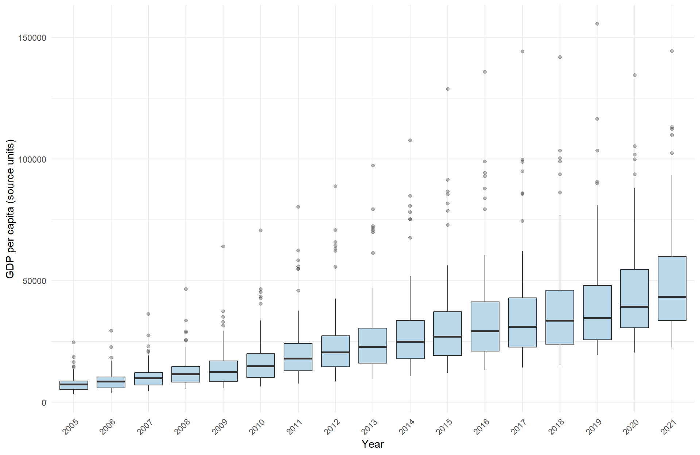
The distributions show the county-level spread within each year. These are the supplied GDPPC values; the exercise does not apply an inflation adjustment.
The cube stores one boundary for each county and one GDPPC record for each county-year combination. A complete cube is essential because the later calculations use the same set of locations at each time step.
endpoint_data <- hunan %>%
left_join(filter(GDPPC, Year %in% range(years)),
by = "County", relationship = "one-to-many")
ggplot(endpoint_data) +
geom_sf(aes(fill = GDPPC), colour = "white", linewidth = 0.1) +
facet_wrap(~ Year, nrow = 1) +
scale_fill_viridis_c(option = "C", name = "GDPPC") +
coord_sf(datum = NA) + theme_void()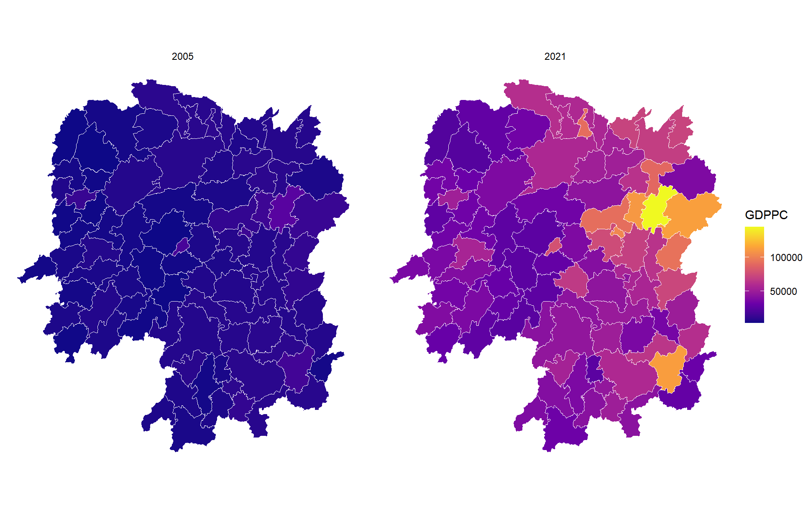
A common colour scale makes the two years comparable. These maps show the original values; the hot spot analysis evaluates their spatial concentration.
I use Queen contiguity: counties that share an edge or a vertex are neighbours. Following the chapter, I include each county in its neighbour list and calculate inverse-distance weights between representative points inside the polygons. Nearby neighbours receive greater weight.
In sfdep, the zero-distance self link receives weight zero under inverse-distance weighting. I retain this chapter setting for the yearly demonstration. The final EHSA calculation uses its default row-standardised Queen weights, including positive self weights, and adds temporal neighbours.
centres <- st_coordinates(st_point_on_surface(st_geometry(hunan)))
edges <- tibble(from = rep(seq_along(queen_nb), lengths(queen_nb)),
to = unlist(queen_nb)) %>% filter(from < to)
ggplot() +
geom_sf(data = hunan, fill = "#f3f5f7", colour = "#9aa3ac", linewidth = 0.2) +
geom_segment(data = edges,
aes(x = centres[from, 1], y = centres[from, 2],
xend = centres[to, 1], yend = centres[to, 2]),
colour = "#54728a", linewidth = 0.35, alpha = 0.7) +
geom_point(aes(centres[, 1], centres[, 2]), size = 0.6, colour = "#23435b") +
coord_sf(datum = NA) + theme_void()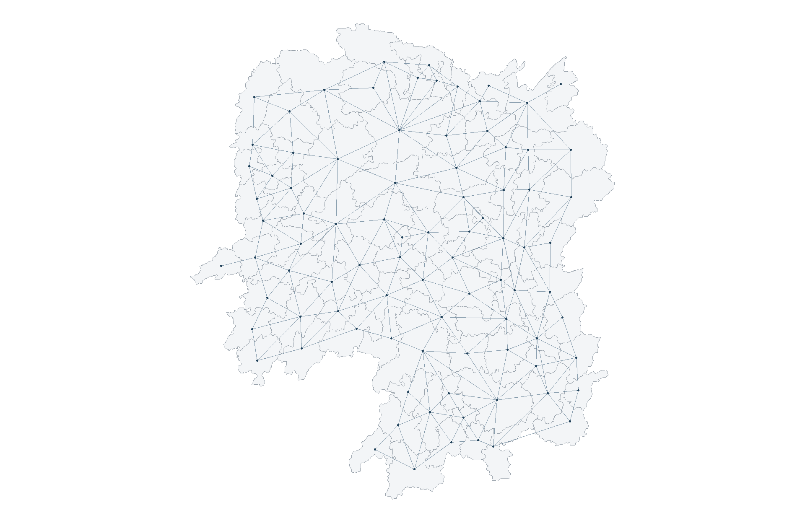
I calculate the spatial statistic separately for each year, using 499 conditional permutations and a fixed seed. The county order within every year matches the boundary order.
gi_endpoints <- hunan %>%
left_join(gi_stars %>% filter(Year %in% range(years)) %>%
select(County, Year, gi_star),
by = "County", relationship = "one-to-many")
gi_limit <- max(abs(gi_endpoints$gi_star))
ggplot(gi_endpoints) +
geom_sf(aes(fill = gi_star), colour = "white", linewidth = 0.1) +
facet_wrap(~ Year, nrow = 1) +
scale_fill_gradient2(low = "#2166ac", mid = "#f7f7f7", high = "#b2182b",
limits = c(-gi_limit, gi_limit), name = "Gi*") +
coord_sf(datum = NA) + theme_void()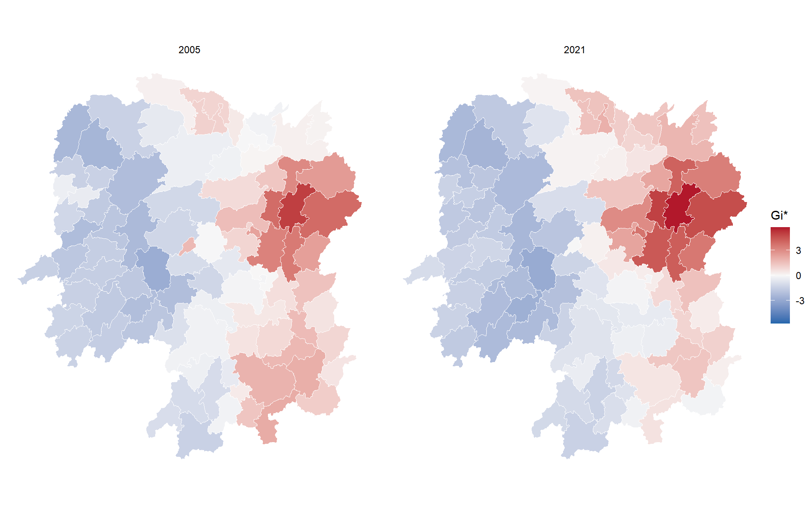
Positive values indicate concentration of relatively high GDPPC, while negative values indicate concentration of relatively low GDPPC. The colours alone do not establish statistical significance.
Mann–Kendall tests for a monotonic trend without requiring normally distributed observations. Its null hypothesis is that there is no monotonic trend. Kendall’s tau ranges from −1 to 1: a positive value indicates an increasing tendency and a negative value indicates a decreasing tendency. Individual years can still fluctuate.
cbg <- gi_stars %>%
filter(County == "Changsha") %>%
arrange(Year) %>% select(County, Year, gi_star)
changsha_mk <- Kendall::MannKendall(cbg$gi_star)
p <- ggplot(cbg, aes(Year, gi_star)) +
geom_hline(yintercept = 0, colour = "grey65", linetype = "dashed") +
geom_line(colour = "#245a81", linewidth = 0.8) +
geom_point(colour = "#245a81", size = 2) +
scale_x_continuous(breaks = years[seq(1, length(years), 2)]) +
labs(x = "Year", y = "Gi*", title = "Changsha: spatial clustering over time")
p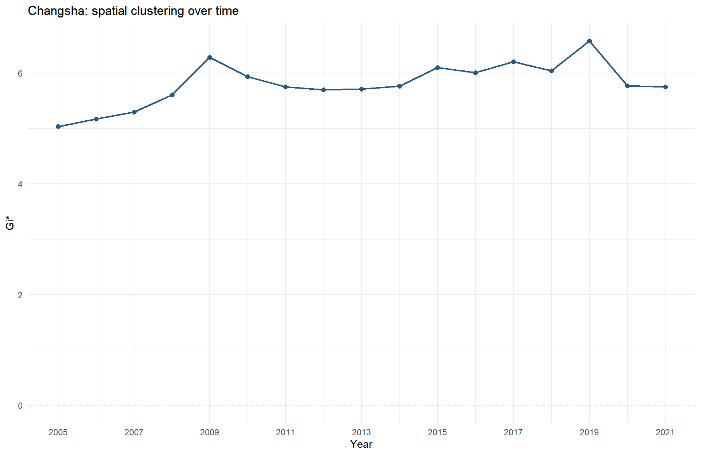
For Changsha, tau = 0.485 and p = 0.00742. At the 5% level, this result supports a statistically significant monotonic trend. The direction is upward in the spatial statistic.
Hover over a point to inspect its year and Gi* value. The interactive view uses the same series as the static figure.
I apply the same test to each county’s chronologically ordered yearly Gi* series. The reported p-values are unadjusted. A significant upward trend can describe an intensifying positive statistic or a negative statistic moving towards zero, so its sign must be read together with the series.
mk_results <- gi_stars %>%
arrange(County, Year) %>%
group_by(County) %>%
summarise(mk = list(unclass(Kendall::MannKendall(gi_star))),
.groups = "drop") %>%
unnest_wider(mk) %>%
mutate(trend = case_when(
sl >= 0.05 ~ "No significant trend",
tau > 0 ~ "Increasing Gi*",
TRUE ~ "Decreasing Gi*"))
trend_levels <- c("Decreasing Gi*", "No significant trend", "Increasing Gi*")
trend_colours <- c("Decreasing Gi*" = "#2166ac",
"No significant trend" = "#d9d9d9",
"Increasing Gi*" = "#b2182b")
trend_sf <- hunan %>% left_join(mk_results, by = "County")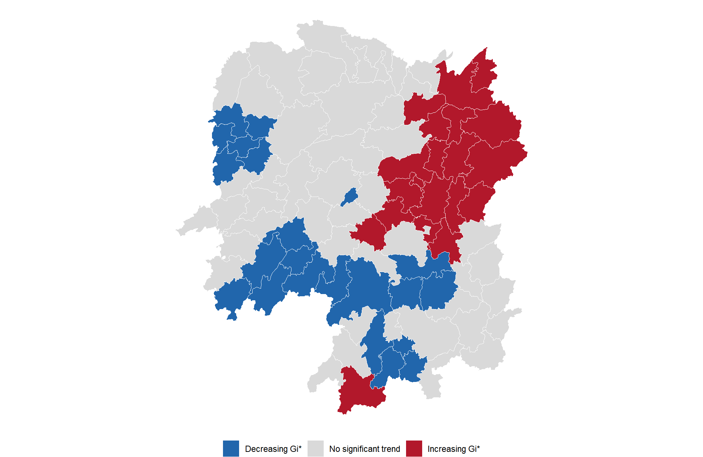
There are 20 increasing and 22 decreasing significant Gi* trends. The remaining 46 counties do not pass this trend threshold.
strongest <- mk_results %>%
arrange(sl, desc(abs(tau)), County) %>% slice_head(n = 10)
ggplot(strongest, aes(reorder(County, tau), tau, fill = trend)) +
geom_col(width = 0.7) + coord_flip() +
scale_fill_manual(values = trend_colours, guide = "none") +
scale_y_continuous(limits = c(-1, 1)) +
labs(x = NULL, y = "Kendall's tau")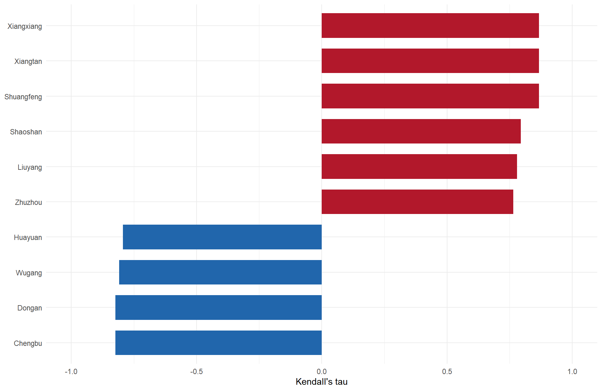
I follow the chapter’s final call with a one-step temporal lag and 99 simulations. With no custom weight columns supplied, sfdep constructs row-standardised Queen weights including each county itself. I explicitly retain the function’s 1% classification threshold and set the random seed for reproducibility.
set.seed(62606)
ehsa <- emerging_hotspot_analysis(
x = GDPPC_st, .var = "GDPPC", k = 1, nsim = 99,
threshold = 0.01, include_gi = TRUE)
ehsa_gi <- attr(ehsa, "gi_star")
ehsa$classification_raw <- ehsa$classification
ehsa$classification <- str_replace_all(ehsa$classification,
c("oscilating" = "oscillating", "hotspot" = "hot spot", "coldspot" = "cold spot"))
hunan_ehsa <- hunan %>%
left_join(as_tibble(ehsa), by = c("County" = "location"))The classification uses the sequence of significant positive and negative space-time statistics and their trend. In this implementation, the returned p_value is the Mann–Kendall trend p-value. The function does not apply a false discovery rate correction automatically. With 99 simulations, the smallest simulated p-value is 0.01, so the classification is an exploratory result at relatively coarse permutation resolution.
class_counts <- as_tibble(ehsa) %>% count(classification, sort = TRUE)
ggplot(class_counts, aes(reorder(classification, n), n)) +
geom_col(fill = "#486b83", width = 0.7) +
geom_text(aes(label = n), hjust = -0.15) + coord_flip() +
scale_y_continuous(expand = expansion(mult = c(0, 0.13))) +
labs(x = NULL, y = "Counties")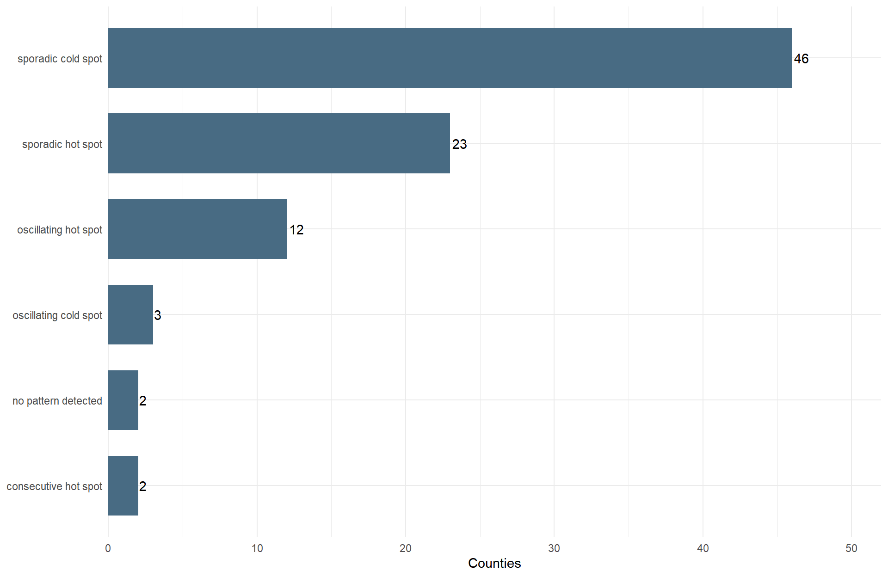
The most frequent class is sporadic cold spot, containing 46 counties. Class labels describe the history of spatial clustering rather than GDPPC growth itself.
I show the classifications for all counties before applying the chapter’s additional trend filter. This preserves classes whose definition does not require a significant monotonic trend.
all_class_colours <- c(
"no pattern detected" = "#d9d9d9",
"new hot spot" = "#fee08b", "consecutive hot spot" = "#fdae61",
"intensifying hot spot" = "#a50026", "persistent hot spot" = "#d73027",
"diminishing hot spot" = "#f46d43", "sporadic hot spot" = "#fdbf6f",
"oscillating hot spot" = "#e78ac3", "historical hot spot" = "#bf812d",
"new cold spot" = "#d1e5f0", "consecutive cold spot" = "#92c5de",
"intensifying cold spot" = "#053061", "persistent cold spot" = "#2166ac",
"diminishing cold spot" = "#4393c3", "sporadic cold spot" = "#80b1d3",
"oscillating cold spot" = "#8073ac", "historical cold spot" = "#35978f")
observed_classes <- sort(unique(ehsa$classification))
stopifnot(all(observed_classes %in% names(all_class_colours)))
class_colours <- all_class_colours[observed_classes]
ehsa_map <- tm_shape(hunan_ehsa) +
tm_polygons(fill = "classification",
fill.scale = tm_scale_categorical(values = class_colours),
fill.legend = tm_legend(title = "EHSA class")) +
tm_borders(col = "white", lwd = 0.4) +
tm_title("Emerging hot spot analysis: 2005-2021")
ehsa_map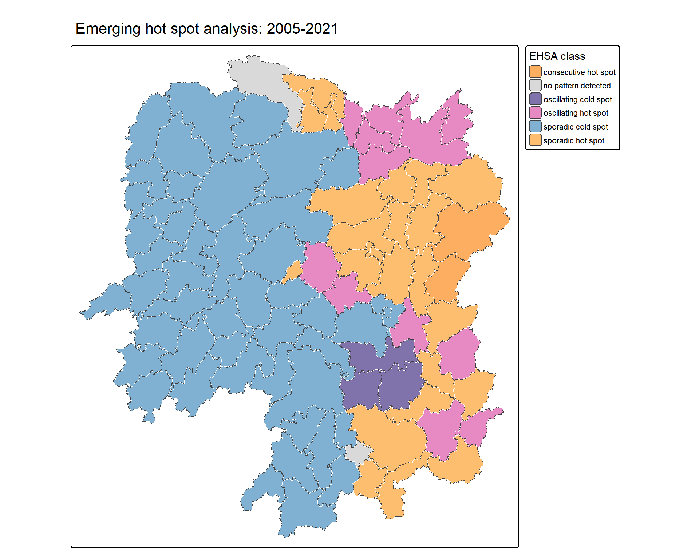
The chapter also filters the output to counties with a Mann–Kendall p-value below 0.05. Grey counties here are excluded by that trend filter. Their colour in the previous map remains the full EHSA classification.
ehsa_sig <- hunan_ehsa %>% filter(p_value < 0.05)
tm_shape(hunan_ehsa) +
tm_polygons(fill = "#e6e6e6", col = "white", lwd = 0.4) +
tm_shape(ehsa_sig) +
tm_polygons(fill = "classification",
fill.scale = tm_scale_categorical(values = class_colours),
fill.legend = tm_legend(title = "EHSA class")) +
tm_borders(col = "white", lwd = 0.4) +
tm_title("EHSA classes with a significant Gi* trend")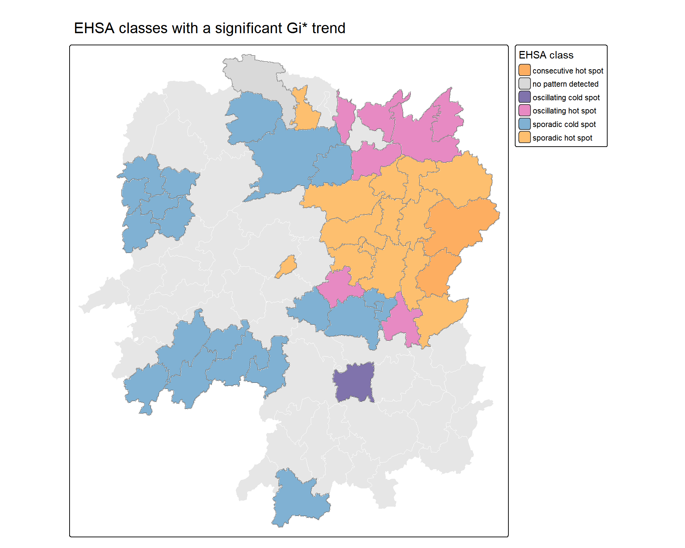
A new spot occurs only at the final time step. A consecutive spot has an uninterrupted run ending at the final step, with fewer than 90% of all steps significant. Persistent, intensifying and diminishing classes have significant spots in at least 90% of the steps; their labels distinguish the trend in the strength of clustering.
Sporadic spots have intermittent significance. Oscillating spots have experienced significance of both signs, while historical spots have a long history of significance but do not qualify as a spot at the final step. No pattern detected means that the sequence does not satisfy an EHSA class rule.
The following examples plot one county from each observed class, up to six classes. The points highlight the significant space-time statistics used by EHSA, rather than the standalone yearly statistics above.
ehsa_series <- GDPPC %>%
mutate(gi_star = ehsa_gi$gi_star, p_sim = ehsa_gi$p_sim) %>%
left_join(as_tibble(ehsa) %>% select(location, classification, tau),
by = c("County" = "location"))
examples <- as_tibble(ehsa) %>%
arrange(classification, desc(abs(tau)), location) %>%
group_by(classification) %>% slice_head(n = 1) %>% ungroup() %>%
slice_head(n = 6)
ehsa_series %>% filter(County %in% examples$location) %>%
mutate(panel = paste(County, classification, sep = "\n")) %>%
ggplot(aes(Year, gi_star)) +
geom_hline(yintercept = 0, colour = "grey65", linetype = "dashed") +
geom_line(colour = "#486b83") +
geom_point(aes(shape = p_sim <= 0.01), size = 2, colour = "#245a81") +
scale_shape_manual(values = c(`FALSE` = 1, `TRUE` = 16),
name = "Significant bin") +
facet_wrap(~ panel, ncol = 2, scales = "free_y") +
labs(x = "Year", y = "Space-time Gi*") +
theme(legend.position = "bottom")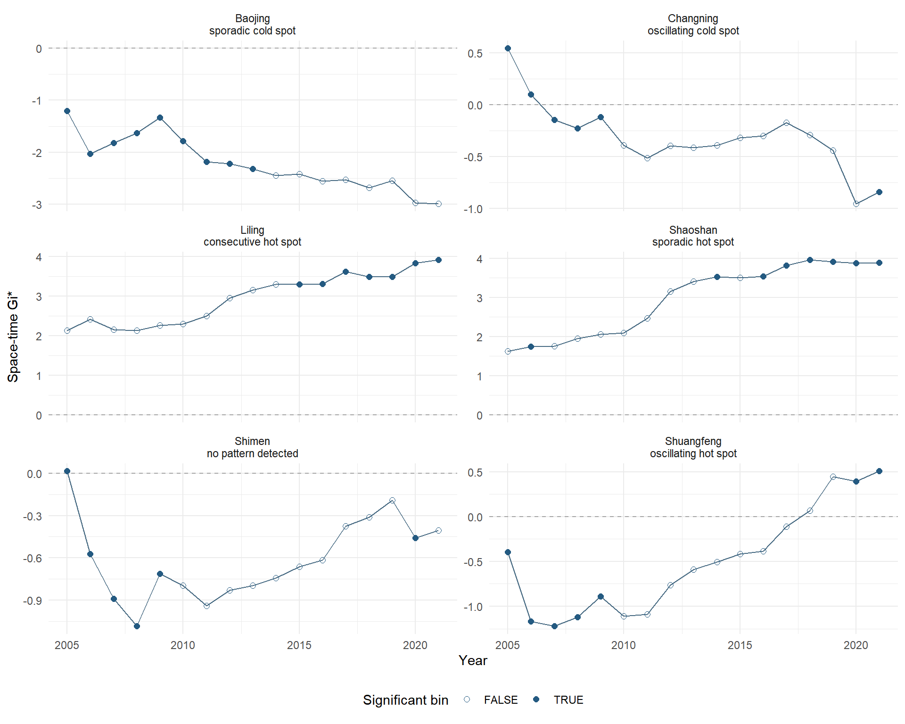
The annual Gi* series reveals how each county’s spatial concentration changes relative to other counties in the same year. Mann–Kendall summarises its monotonic direction. EHSA adds the timing and frequency of significant hot and cold spots, using its own space-time neighbourhood.
This exercise uses a fixed neighbourhood and the supplied GDPPC series. The unadjusted significance levels and 99-simulation EHSA setting follow the teaching workflow. The ordinary Mann–Kendall test assumes independent observations in time; serial dependence can affect its p-values. A substantive economic study would also examine price comparability, temporal dependence, sensitivity to neighbourhood choices and a larger number of simulations.
Chapter 11: Emerging Hot Spot Analysis, sfdep source and documentation, Mann–Kendall test guidance and the instructor’s data repository.